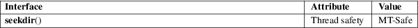

seekdir − set the position of the next readdir() call in the directory stream.
Standard C library (libc, −lc)
#include <dirent.h>
void seekdir(DIR *dirp, long loc);
Feature Test Macro Requirements for glibc (see feature_test_macros(7)):
seekdir():
_XOPEN_SOURCE
|| /* glibc >= 2.19: */ _DEFAULT_SOURCE
|| /* glibc <= 2.19: */ _BSD_SOURCE || _SVID_SOURCE
The seekdir() function sets the location in the directory stream from which the next readdir(2) call will start. The loc argument should be a value returned by a previous call to telldir(3).
The seekdir() function returns no value.
For an explanation of the terms used in this section, see attributes(7).

POSIX.1-2008.
POSIX.1-2001, 4.3BSD.
Up to glibc 2.1.1, the type of the loc argument was off_t. POSIX.1-2001 specifies long, and this is the type used since glibc 2.1.2. See telldir(3) for information on why you should be careful in making any assumptions about the value in this argument.
lseek(2), closedir(3), opendir(3), readdir(3), rewinddir(3), scandir(3), telldir(3)